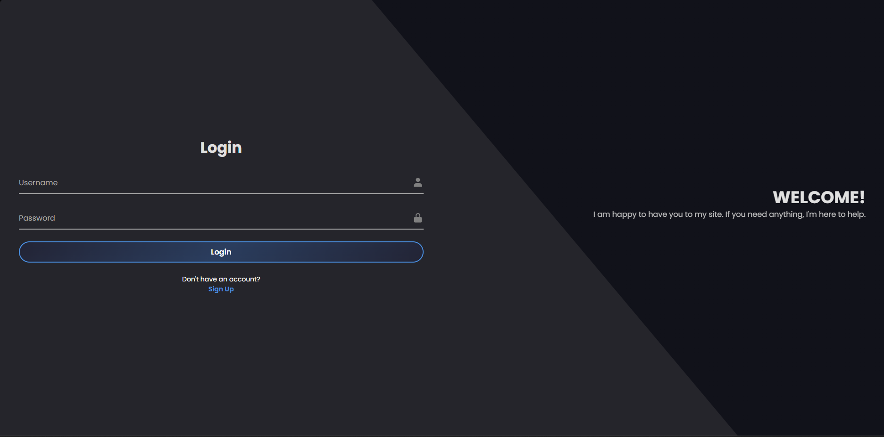
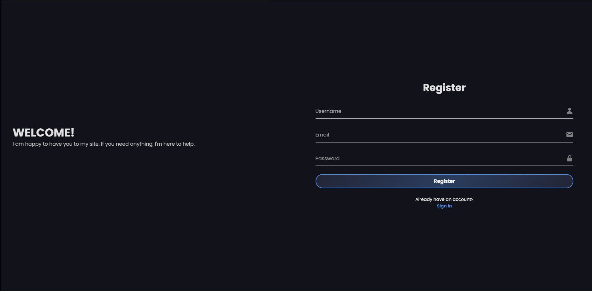

A Facebook-inspired full-stack social media platform developed to strengthen practical skills in modern web development, authentication, and secure application design.

Conversative is a personal web application inspired by modern social networking platforms. The project focuses on implementing core social media functionality while providing hands-on experience in secure web development, backend architecture, and responsive user interface design. The application serves as a long-term learning project for exploring scalable web application development and industry-standard programming practices.
Modern social platforms combine authentication, user-generated
content, media handling, and secure communication into a single
application. Building these systems from scratch provides valuable
experience with backend development, database management, and secure
request handling.
Conversative was created to strengthen practical software
engineering skills by recreating these real-world application
concepts.
Backend
Frontend
Security
Tools
Conversative follows a full-stack client-server architecture where frontend interfaces communicate with a PHP backend connected to a MySQL database. The application separates presentation, business logic, and data management to improve maintainability while implementing secure request validation and database interaction.
